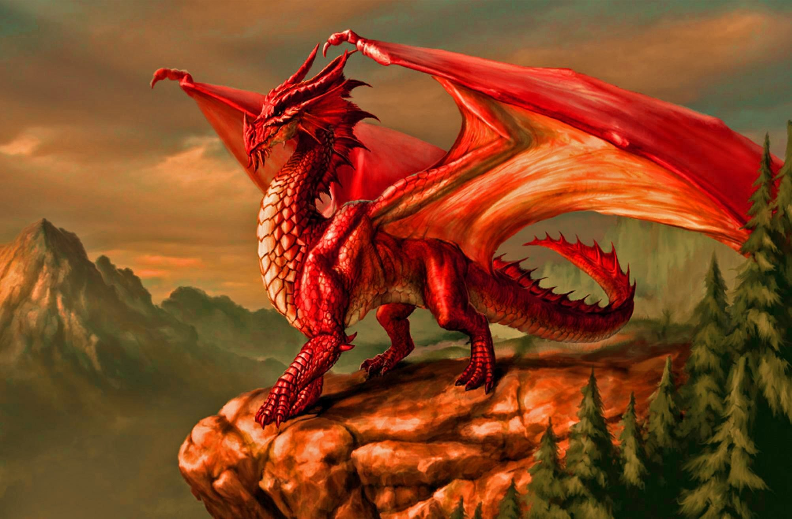
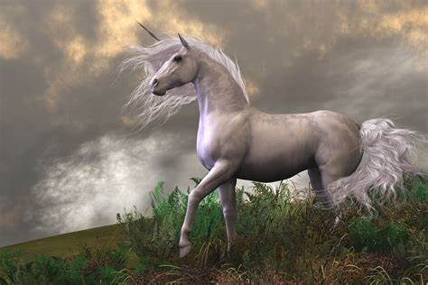

In a land far beyond the mountains, where the sky shimmered in hues of lavender and gold, there existed two ancient and magical kingdoms: Draconia, the realm of the dragons, and Lunaris, the land of the unicorns.
For centuries, the two kingdoms had lived in harmony, their rulers bound by an ancient pact of peace. The dragons, with their immense power over fire and flight, ruled the skies. Their scales glistened like gemstones under the sun, and their wings created the winds that blew across the lands. The unicorns, pure and graceful, governed the earth below. Their shimmering horns could heal any wound, purify water, and bring life to the barren soil.
But peace is fragile, even in magical lands.
One fateful day, the peace was broken. A young dragon prince, Ignis, ventured too close to the sacred Silver Lake, the heart of Lunaris, where the unicorns gathered to renew their magic under the light of the twin moons. Ignis, curious and mischievous, drank from the lake, unaware that it was forbidden for dragons to do so. The lake began to dry up, its magic fading, and the unicorns were left without their source of power.
Furious, the unicorn queen, Selene, demanded retribution. She called upon her council and decided to break the ancient pact. "If the dragons care so little for our sacred bond, they are no longer our allies," she declared. War loomed over the kingdoms, and the skies darkened with the shadows of dragons preparing for battle.
But not all was lost.
In the heart of Lunaris, a young unicorn named Lira, with a golden horn and a heart as pure as starlight, did not believe in war. She had always been fascinated by the dragons, admiring their strength and grace from afar. In secret, she journeyed to Draconia to find Ignis, hoping to resolve the conflict before it consumed both realms.
Ignis, ashamed of his mistake, had been banished from his home and was hiding in a cave on the edge of the kingdom. When Lira found him, he was a shadow of the proud dragon he once was. His scales had lost their luster, and his once-mighty wings were tattered and torn.
"I ever meant to harm the unicorns," Ignis confessed. "I was curious about your world, but now my actions have brought ruin."
Lira, sensing the truth in his words, knew that war was not the answer. "Then we must fix what has been broken," she said. Together, they embarked on a perilous journey to the ancient Elder Tree, the source of all magic in their world. It was said that the tree's roots connected the magic of the dragons and unicorns, and that only through unity could the balance be restored.
The journey was fraught with danger. They had to cross the Abyss of Shadows, where creatures of darkness lurked, and climb the Stormy Peaks, where lightning crackled like a serpent's tail. Along the way, they learned to trust one another, their bond growing stronger with each challenge they faced.
When they finally reached the Elder Tree, its once-vibrant leaves had turned gray, and its roots were withering. To save it, Ignis and Lira had to combine their magic. Ignis breathed his dragon fire into the earth, and Lira touched her horn to the roots. The ground trembled, and for a moment, it seemed as though nothing would happen.
But then, the tree began to glow. Its roots pulsed with life, and its leaves turned a brilliant emerald green. The magic of both dragons and unicorns flowed once more, stronger than ever before.
Word of their success spread across the land, and the rulers of both kingdoms realized the folly of their ways. Queen Selene and the Dragon King Draconis met at the newly healed Silver Lake, where they renewed their ancient pact, this time with a deeper understanding of one another's worlds.
As for Ignis and Lira, they became legends. The first dragon and unicorn to unite their magic, their friendship became a symbol of the power of unity. And though they were from different worlds, their bond was unbreakable, proving that even in the most magical of realms, peace could be achieved not through might, but through understanding.